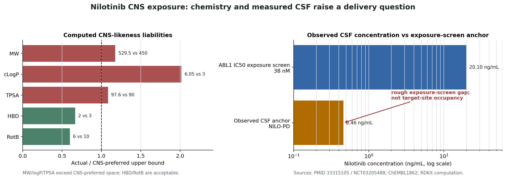

CNS exposure
Require matched plasma/CSF pharmacokinetics and a credible bridge from measured exposure to the target-site concentration needed for c-Abl modulation.
Unresolved at cutoffTime-split public reference case
Could the current oral formulation plausibly clear the exposure, target-engagement, response-marker, and safety gates required for another efficacy trial?
Before treating this as an efficacy problem, treat it as an exposure and target-engagement problem.
The pre-outcome public record did not prove that c-Abl biology was irrelevant. It showed that another efficacy study would be difficult to interpret without first resolving whether the formulation produced decision-sufficient CNS exposure, engaged the pathway, moved a qualified response marker, and remained tolerable.
The pre-cutoff risk ledger
Require matched plasma/CSF pharmacokinetics and a credible bridge from measured exposure to the target-site concentration needed for c-Abl modulation.
Unresolved at cutoffQualify a CNS-adjacent pathway marker—rather than assuming systemic dosing established brain-level mechanism engagement.
Unresolved at cutoffTreat exploratory biomarker changes as hypothesis-generating until they link coherently to randomized, patient-level clinical response.
Unresolved at cutoffModel whether QTc, hepatic, vascular, hematologic, pancreatic, and interaction liabilities cap the dose below a plausible CNS-active exposure.
Decision-limitingThe later randomized NILO-PD report found no clinical efficacy signal for the tested oral regimen and reported very low CNS exposure. Those observations align with the pre-cutoff demand for exposure and target-engagement gates before another efficacy trial.
What this does not prove: that the workflow predicted the trial result, that poor CNS exposure was the sole cause of the result, or that every CNS-delivery or analogue strategy would fail.
Later outcome artifact
This comparison uses the later NILO-PD report and is deliberately isolated from the pre-outcome reconstruction. It is an outcome screen—not evidence used to generate the HOLD disposition.

Claim-to-source trail
What would change the decision
See exactly what the diligence package includes.
View the report package →